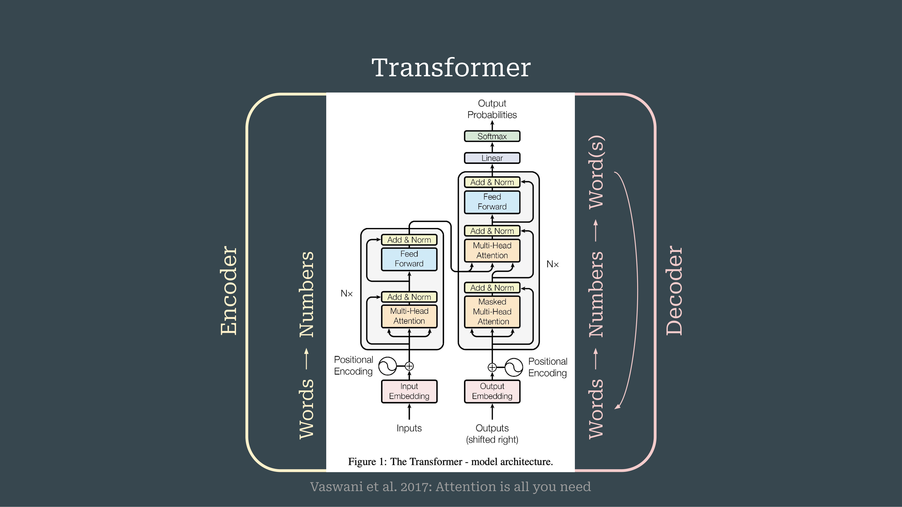

3 Large Language Models for the History, Philosophy, and Sociology of Science
Overview
Arno Simons, from Technische Universität Berlin and funded by the European Research Council, presents ‘Large Language Models for the History, Philosophy, and Sociology of Science’. This presentation offers a foundational primer on Large Language Models (LLMs) and their applications within the History, Philosophy, and Sociology of Science (HPSS) purview. Simons delineates current HPSS applications and provokes critical reflection for discussion. He details the pivotal Transformer architecture, distinguishing between encoder-based (BERT) and decoder-based (GPT) models, and explores various domain adaptation strategies, including pre-training, fine-tuning, and Retrieval-Augmented Generation (RAG). Furthermore, Simons outlines specific HPSS applications such as data parsing, entity extraction, conceptual history analysis, and discourse analysis. The presentation concludes by addressing HPSS-specific challenges, including historical language evolution and the imperative for LLM literacy, whilst highlighting new opportunities for bridging qualitative and quantitative research approaches.
3.1 Presentation Agenda and Introduction

The speaker systematically articulates three core areas: an essential primer on Large Language Models (LLMs) and their adaptation to scientific domains, a detailed exposition of current applications within the History, Philosophy, and Sociology of Science (HPSS), and a suite of critical reflections intended to stimulate workshop discussions. Recognising the audience’s varied disciplinary backgrounds, Arno Simons aims to provide a lucid yet exacting introduction to the subject matter.
3.2 The Transformer Architecture: Foundations of LLMs

The foundational Transformer architecture forms the bedrock of virtually all contemporary Large Language Models. Vaswani and colleagues originally conceived this architecture in 2017 for inter-language translation, as detailed in their seminal 2017 paper, ‘Attention is All You Need’. This model comprises two interlinked streams: an Encoder and a Decoder. The Encoder processes input words, transforming them into numerical representations that then undergo extensive processing before transfer to the Decoder. Subsequently, the Decoder generates output words, iteratively feeding each newly produced word back into the system to facilitate the prediction of the next word in the sequence. Within these numerical processing stages, various layers incrementally refine and contextualise word embeddings. Crucially, the Encoder processes the entire input sentence simultaneously, allowing each word to interact reciprocally with all other words, thereby constructing a comprehensive contextual understanding of the complete input. Conversely, the Decoder operates unidirectionally; it can only access preceding words to predict the next token, preventing it from ‘looking ahead’ into the future sequence. Immediately following its introduction, researchers began re-engineering these individual Encoder and Decoder streams to develop the pre-trained language models prevalent today.
3.3 Evolution to Pre-trained Language Models: Encoder Focus

The field has profoundly transitioned from models primarily designed for translation to those capable of deep linguistic comprehension and generation. These pre-trained models, requiring only minimal supplementary training, now effectively execute a wide array of Natural Language Processing (NLP) tasks. For clarity, the discussion initially focuses on the Encoder component, which plays a central role in this evolution.
3.4 Bidirectional and Generative Models: BERT and GPT

The Encoder stream evolved into models such as BERT, an acronym for Bidirectional Encoder Representations from Transformers. This architecture enables each word within an input sequence to interact with all other words, thereby constructing a holistic, context-rich understanding of the entire input. Devlin and colleagues pioneered this architectural paradigm in 2018. Conversely, the Decoder stream gave rise to the GPT family of models, or Generative Pre-trained Transformers, which form the bedrock of contemporary systems like ChatGPT. These models, constrained to process information unidirectionally by only observing preceding tokens, possess the unique capacity to generate novel text, a function not inherently present in BERT-like models. Consequently, BERT models primarily facilitate coherent sentence understanding, whilst GPT models specialise in text generation. Beyond these foundational distinctions, the field has developed more complex architectures, including combined encoder-decoder models and sophisticated methods for adapting decoders to perform functions traditionally associated with encoders, such as XLNet, upon which XLM builds.
3.5 Landscape of Scientific Large Language Models

The landscape of Large Language Models has evolved considerably, demonstrating a pronounced focus on applications within specific scientific domains. An overview reveals a more extensive proliferation of Encoder-based, BERT-type models compared to Decoder-based architectures in scientific contexts. Early and influential models in this area included BioBERT, Specter, and Cyber. Presently, researchers have developed a varied array of domain-specific models tailored for fields such as biomedicine, chemistry, material science, climate science, mathematics, physics, and social science, amongst others, reflecting the pervasive applicability of LLMs across scientific disciplines.
3.6 Domain and Task Adaptation Strategies for LLMs

Adapting Large Language Models to specific scientific language demands several sophisticated strategies. Initially, models undergo pre-training, where they learn language by predicting the next token, as seen in GPT models, or by predicting randomly masked words, characteristic of BERT models. However, full pre-training necessitates prohibitive computational resources and expansive datasets. Consequently, continued pre-training offers a more accessible alternative, involving the further training of an already pre-trained model on domain-specific language; for instance, researchers might fine-tune a BERT model on physics texts.
Beyond pre-training, researchers employ additional adaptation techniques. They can append extra layers to pre-trained models and train them for specific classification tasks, such as sentiment analysis or named entity recognition. Prompt-based methods also effectively guide model outputs. Crucially, contrastive learning stands as a pivotal method for generating sentence or document embeddings, enabling the placement of entire documents or sentences within the same embedding space as individual words. Sentence BERT, a widely adopted approach, exemplifies this technique, which Irina Gurevich may further elaborate upon.
Furthermore, Retrieval-Augmented Generation (RAG) represents a significant pipeline for domain adaptation that does not necessitate explicit model re-training. This system integrates multiple models, typically employing a BERT-type model for scoring similarity between a user query and a document database. The BERT model encodes the query into a sentence embedding, facilitating the retrieval of the most relevant passages from the documents. Subsequently, this pipeline integrates the retrieved sentences into the prompt of a generative model, which then produces an informed answer based on this newly provided context. This RAG mechanism forms the bedrock of much contemporary LLM usage, including internet searches performed by systems like ChatGPT. It is vital to recognise that modern reasoning models and agents are not monolithic LLMs but rather complex systems comprising multiple LLMs integrated with various other tools.
3.7 Scientific LLMs Timeline and Survey Context

A timeline comprehensively documents the rapid evolution of scientific Large Language Models from 2018 to 2024, categorising models according to their underlying architecture: ‘Others’, ‘Encoder-Decoder’, ‘Decoders’, and ‘Encoders’. Ho and colleagues detail this landscape in their 2024 survey, ‘A Survey of Pre-trained Language Models for Processing Scientific Text’, highlighting the predominance of Encoder-based models and distinguishing between open-source and closed-source implementations. This timeline provides crucial context for an ongoing survey investigating the utilisation of LLMs as research tools within the History, Philosophy, and Sociology of Science.
3.8 Key Distinctions in Large Language Models

Understanding Large Language Models demands an appreciation of several key distinctions. Architecturally, models exhibit significant variation, encompassing encoder-based, decoder-based, and combined encoder-decoder designs. Furthermore, researchers employ diverse fine-tuning strategies to adapt pre-trained models for specific tasks. A crucial conceptual difference lies between word embeddings and sentence embeddings, as these represent distinct levels of linguistic abstraction. Moreover, LLMs operate at varying levels of complexity, ranging from standalone models to intricate pipelines or advanced agents. Ultimately, no single model serves all purposes; rather, the selection of an appropriate model hinges entirely upon the specific task at hand.
3.9 Applications of LLMs in HPSS Research

A recent survey delineates the diverse applications of Large Language Models within History, Philosophy, and Sociology of Science research into four primary domains.
Firstly, in dealing with data and sources, LLMs facilitate the parsing and extraction of salient information such as publication types, acknowledgements, and citations. They also enable more interactive engagement with source materials through summarisation and Retrieval-Augmented Generation (RAG)-type conversational interfaces.
Secondly, regarding knowledge structures, these models prove invaluable for entity extraction, identifying specific elements like scientific instruments, celestial bodies, and chemicals. They also assist in mapping complex relationships, including the demarcation of disciplines, interdisciplinary fields, and science-policy discourses.
Thirdly, in analysing knowledge dynamics, LLMs contribute to the study of conceptual histories, charting the evolution of terminology such as ‘theory’ in Digital Humanities or ‘virtual’ and ‘Planck’ in physics. Furthermore, they aid in novelty detection, identifying seminal papers and nascent technologies.
Finally, concerning knowledge practices, LLMs support argument reconstruction by identifying premises, conclusions, and causal links. They also enhance citation context analysis, discerning the purpose and affective tone behind citations—a traditional HPSS method now often employed for evaluatory purposes. Moreover, these models assist in discourse analysis, identifying hedging statements, specialised jargon, and instances of boundary work.
Evidently, interest in LLMs within HPSS is accelerating. Whilst findings predominantly appear in information science journals like Scientometrics and Jasis, a notable trend indicates increasing publication in traditionally non-computational journals. This shift underscores the models’ semantic capabilities, which are attracting qualitative researchers and philosophers alike.